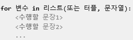
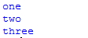
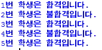
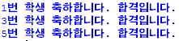
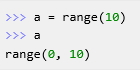
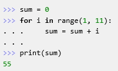
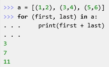

chapter08 - for문에 대해 알아보자
파이썬의 특징을 가장 잘 대변해주는 것이 바로 이 for문이다.
for문은 매우 유용하고 사용할 때 문장 구조가 한눈에 들어오며
이것을 잘만 쓰면 프로그래밍이 즐겁기까지 하다.
(1) for문의 기본구조

리스트의 첫 번째 요소부터 마지막 요소까지 차례로 변수에 대입해서
수행할 문장1, 수행할 문장2 등을 수행한다.
(3)for와 continue#예제8.1 test_list = ['one', 'two', 'three'] for i in test_list: print(i)
#예제8.2 "총 5명의 학생이 시험을 보았는 데 시험점수가 60점이 넘으면 합격, 그렇지 않으면 불합격이다. 합격인지 불합격인지 보여줘라" marks = [90, 25, 67, 45, 80] number = 0 for mark in marks: number = number +1 if mark >= 60: print("%d번 학생은 합격입니다." % number) else: print("%d번 학생은 불합격입니다." % number)

각각의 학생에게 번호를 붙이기 위해서 number라는 변수를 이용하였다. 점수 리스트인 marks에서 차례로 점수를 꺼내어 mark라는 변수에 대입하고 for안의 문장들을 수행하게 된다. 우선 for문이 한번씩 수행될 때마다 number는 1씩 증가하고 mark가 60이상이면 합격 메시지를 출력하고 60을 넘지 않으면 불합격 메시지를 출력한다.
#예제8.3
marks = [90, 25, 67, 45, 80]
number = 0
for mark in marks:
number = number +1
if mark < 60: continue
print("%d번 학생 축하합니다. 합격입니다. " % number)

(4)for와 range함수
for문은 range라는 숫자 리스트를 자동으로 만들어 주는 함수와 함께 사용되는 경우가 많다.
다음은 range함수의 간단한 사용법이다.

for와 range를 이용하면 1부터 10까지 더하는 것을 다음과 같이 쉽게 구현할 수 있다.

다양한 for문 사용

위의 예는 a리스트의 요소 값이 터플이기 때문에
각각의 요소들이 자동으로 (first, last)라는 변수에 대입되게 된다.
<출처> 점프 투 파이썬, 박응용(https://wikidocs.net/book/1)